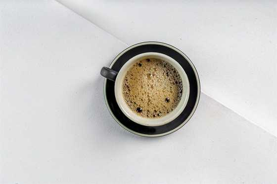
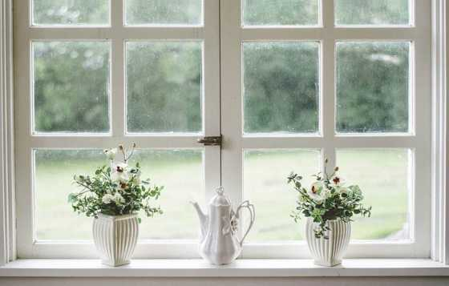

抹茶

珈琲
朝の一杯に、抹茶を。
お茶と珈琲、ふたつの専門性を持つ姉妹が届ける、自分のために淹れる一杯。
お店のこと
「抹茶珈琲姉妹」は、日本茶と珈琲それぞれのプロである姉妹が始めたブランドです。朝に珈琲を飲むように、抹茶を飲む文化を目指し、「自分のために淹れる1杯」をテーマに日本茶と珈琲の楽しみ方を発信しています。
2026年1月に岐阜県大垣市でオープン。有機栽培の宇治抹茶、珈琲、日本茶を扱う「買える。飲める。体験型スタンド。」です。
出典:店のInstagram・note(詳細は _notes/plan.md)。店名の由来の詳細は確認できていません。


メニュー
扱うのは、有機栽培の宇治抹茶、珈琲、日本茶。具体的なメニュー・価格は準備中です。

抹茶・日本茶
準備中

珈琲
準備中

ラテ
準備中

ドリップ
準備中


口コミ
イメージ例
朝、仕事前に抹茶ラテを買って帰りました。いつもの珈琲の代わりにちょうどいい一杯です。
イメージ例
テイクアウトでも丁寧に淹れてくれる感じが好きです。お茶の香りが立ちました。
イメージ例
姉妹で選ぶ茶葉や豆の話が楽しく、つい違う種類も試したくなりました。
口コミは創作のイメージ例で、実在のお客様の声ではありません。
アクセス
〒503-0888 岐阜県大垣市丸の内2丁目21
電話:準備中 / 営業時間・定休日:準備中
写真クレジット
掲載写真はフリー素材のイメージで、店舗の実際の様子・商品ではありません。縮小・加工あり。
- guava.jpg「Guava leaves sunlight」מינוזיג / CC0 1.0
- dew.jpg「Dew in green leaves」Gorupka from Slovenia / CC BY 2.0
- veins.jpg「Background green leave macro」作者不明 / パブリックドメイン
- greenbeans.jpg「Green Coffee Beans」Michael Allen Smith@INeedCoffee / CC BY-SA 2.0
- teacup.jpg「Cup of tea at the Gorreana tea factory」Kritzolina / CC BY-SA 4.0
- latte.jpg「Cup of coffee with latte art 2016」Abdulrohmatt / CC BY-SA 4.0
- beans.jpg「Closeup of Coffee Beans」Matthew Henry, via Burst by Shopify / CC BY 2.5
- espresso.jpg「Espresso Coffee 01」Jubair1985 / CC0 1.0
- black.jpg「White cup of black coffee」Jon-Isac Lindberg / CC0 1.0
- tray.jpg「Black coffee on wooden table outdoors.」Nenad Stojkovic / CC BY 2.0
- whisk.jpg「Whisk (IMG 0265)」Matti Blume / CC BY-SA 4.0
- wood.jpg「Weatherworn planks on top of wooden table」W.carter / CC0 1.0
- window.jpg「Porcelain teapot on windowsill」Nathan Fertig (Unsplash) / CC0 1.0